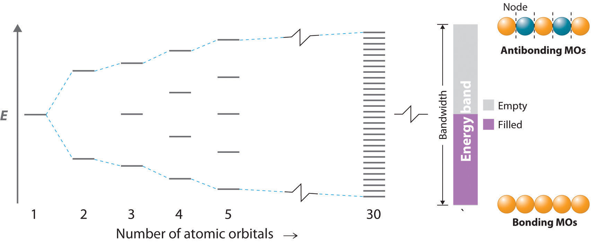
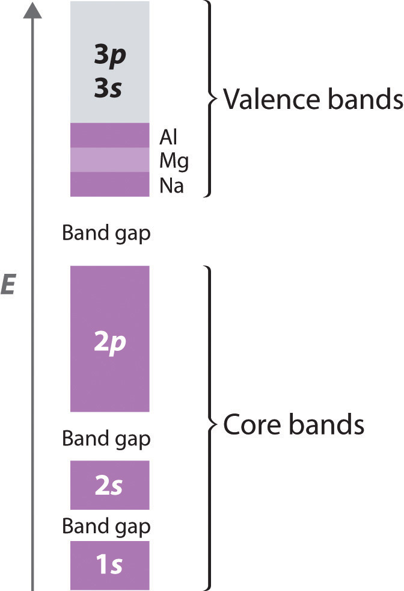
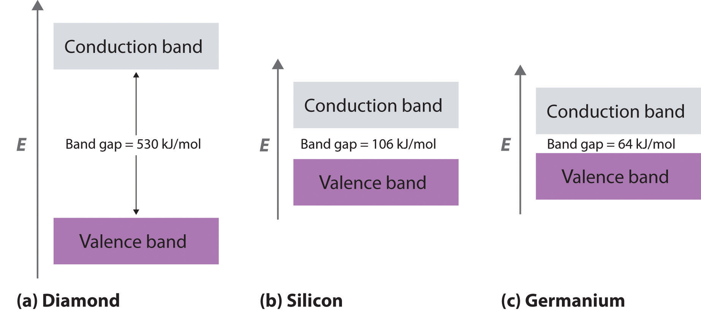
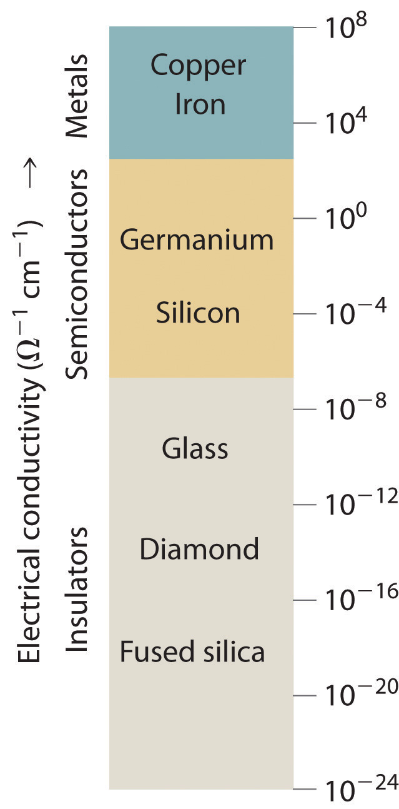
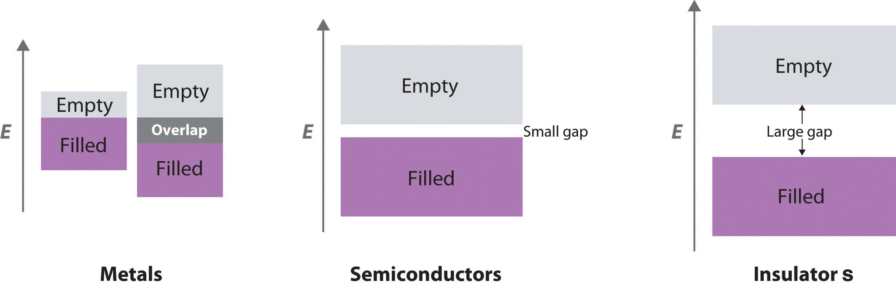
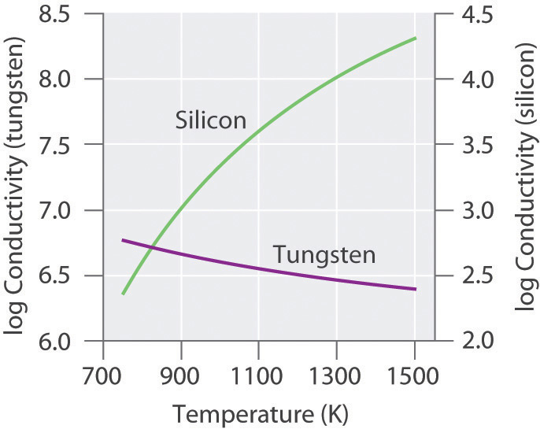
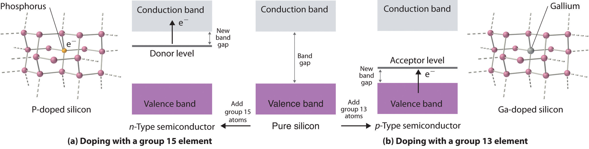

To explain the observed properties of metals, a more sophisticated approach is needed than the electron-sea model described in Section 12.5 "Correlation between Bonding and the Properties of Solids". The molecular orbital theory we used in Chapter 9 "Molecular Geometry and Covalent Bonding Models" to explain the delocalized π bonding in polyatomic ions and molecules such as NO2−, ozone, and 1,3-butadiene can be adapted to accommodate the much higher number of atomic orbitals that interact with one another simultaneously in metals.
In a 1 mol sample of a metal, there can be more than 1024 orbital interactions to consider. In our molecular orbital description of metals, however, we begin by considering a simple one-dimensional example: a linear arrangement of n metal atoms, each containing a single electron in an s orbital. We use this example to describe an approach to metallic bonding called band theoryA theory used to describe the bonding in metals and semiconductors., which assumes that the valence orbitals of the atoms in a solid interact, generating a set of molecular orbitals that extend throughout the solid.
If the distance between the metal atoms is short enough for the orbitals to interact, they produce bonding, antibonding, and nonbonding molecular orbitals. The left portion of Figure 12.21 "The Molecular Orbital Energy-Level Diagram for a Linear Arrangement of ", which is the same as the molecular orbital diagram in Figure 9.35 "Bonding in Ozone", shows the pattern of molecular orbitals that results from the interaction of ns orbitals as n increases from 2 to 5.
Figure 12.21 The Molecular Orbital Energy-Level Diagram for a Linear Arrangement of n Atoms, Each of Which Contains a Singly Occupied s Orbital
This is the same diagram as Figure 9.35 "Bonding in Ozone", with the addition of the far right-hand portion, corresponding to n = 30 and n = ∞. As n becomes very large, the energy separation between adjacent levels becomes so small that a single continuous band of allowed energy levels results. The lowest-energy molecular orbital corresponds to positive overlap between all the atomic orbitals to give a totally bonding combination, whereas the highest-energy molecular orbital contains a node between each pair of atoms and is thus totally antibonding.
As we saw in Chapter 9 "Molecular Geometry and Covalent Bonding Models", the lowest-energy orbital is the completely bonding molecular orbital, whereas the highest-energy orbital is the completely antibonding molecular orbital. Molecular orbitals of intermediate energy have fewer nodes than the totally antibonding molecular orbital. The energy separation between adjacent orbitals decreases as the number of interacting orbitals increases. For n = 30, there are still discrete, well-resolved energy levels, but as n increases from 30 to a number close to Avogadro’s number, the spacing between adjacent energy levels becomes almost infinitely small. The result is essentially a continuum of energy levels, as shown on the right in Figure 12.21 "The Molecular Orbital Energy-Level Diagram for a Linear Arrangement of ", each of which corresponds to a particular molecular orbital extending throughout the linear array of metal atoms. The levels that are lowest in energy correspond to mostly bonding combinations of atomic orbitals, those highest in energy correspond to mostly antibonding combinations, and those in the middle correspond to essentially nonbonding combinations.
The continuous set of allowed energy levels shown on the right in Figure 12.21 "The Molecular Orbital Energy-Level Diagram for a Linear Arrangement of " is called an energy bandThe continuous set of allowed energy levels generated in band theory when the valence orbitals of the atoms in a solid interact with one another, thus creating a set of molecular orbitals that extend throughout the solid.. The difference in energy between the highest and lowest energy levels is the bandwidthThe difference in energy between the highest and lowest energy levels in an energy band. and is proportional to the strength of the interaction between orbitals on adjacent atoms: the stronger the interaction, the larger the bandwidth. Because the band contains as many energy levels as molecular orbitals, and the number of molecular orbitals is the same as the number of interacting atomic orbitals, the band in Figure 12.21 "The Molecular Orbital Energy-Level Diagram for a Linear Arrangement of " contains n energy levels corresponding to the combining of s orbitals from n metal atoms. Each of the original s orbitals could contain a maximum of two electrons, so the band can accommodate a total of 2n electrons. Recall, however, that each of the metal atoms we started with contained only a single electron in each s orbital, so there are only n electrons to place in the band. Just as with atomic orbitals or molecular orbitals, the electrons occupy the lowest energy levels available. Consequently, only the lower half of the band is filled. This corresponds to filling all of the bonding molecular orbitals in the linear array of metal atoms and results in the strongest possible bonding.
The previous example was a one-dimensional array of atoms that had only s orbitals. To extrapolate to two- or three-dimensional systems and atoms with electrons in p and d orbitals is straightforward in principle, even though in practice the mathematics becomes more complex, and the resulting molecular orbitals are more difficult to visualize. The resulting energy-level diagrams are essentially the same as the diagram of the one-dimensional example in Figure 12.21 "The Molecular Orbital Energy-Level Diagram for a Linear Arrangement of ", with the following exception: they contain as many bands as there are different types of interacting orbitals. Because different atomic orbitals interact differently, each band will have a different bandwidth and will be centered at a different energy, corresponding to the energy of the parent atomic orbital of an isolated atom.
Because the 1s, 2s, and 2p orbitals of a period 3 atom are filled core levels, they do not interact strongly with the corresponding orbitals on adjacent atoms. Hence they form rather narrow bands that are well separated in energy (Figure 12.22 "The Band Structures of the Period 3 Metals Na, Mg, and Al"). These bands are completely filled (both the bonding and antibonding levels are completely populated), so they do not make a net contribution to bonding in the solid. The energy difference between the highest level of one band and the lowest level of the next is the band gapThe difference in energy between the highest level of one energy band and the lowest level of the band above it, which represents a set of forbidden energies that do not correspond to any allowed combinations of atomic orbitals.. It represents a set of forbidden energies that do not correspond to any allowed combinations of atomic orbitals.
Figure 12.22 The Band Structures of the Period 3 Metals Na, Mg, and Al
The 3s and 3p valence bands overlap in energy to form a continuous set of energy levels that can hold a maximum of eight electrons per atom.
Because they extend farther from the nucleus, the valence orbitals of adjacent atoms (3s and 3p in Figure 12.22 "The Band Structures of the Period 3 Metals Na, Mg, and Al") interact much more strongly with one another than do the filled core levels; as a result, the valence bands have a larger bandwidth. In fact, the bands derived from the 3s and 3p atomic orbitals are wider than the energy gap between them, so the result is overlapping bandsMolecular orbitals derived from two or more different kinds of valence electrons that have similar energies.. These have molecular orbitals derived from two or more valence orbitals with similar energies. As the valence band is filled with one, two, or three electrons per atom for Na, Mg, and Al, respectively, the combined band that arises from the overlap of the 3s and 3p bands is also filling up; it has a total capacity of eight electrons per atom (two electrons for each 3s orbital and six electrons for each set of 3p orbitals). With Na, therefore, which has one valence electron, the combined valence band is one-eighth filled; with Mg (two valence electrons), it is one-fourth filled; and with Al, it is three-eighths filled, as indicated in Figure 12.22 "The Band Structures of the Period 3 Metals Na, Mg, and Al". The partially filled valence band is absolutely crucial for explaining metallic behavior because it guarantees that there are unoccupied energy levels at an infinitesimally small energy above the highest occupied level.
Band theory can explain virtually all the properties of metals. Metals conduct electricity, for example, because only a very small amount of energy is required to excite an electron from a filled level to an empty one, where it is free to migrate rapidly throughout the crystal in response to an applied electric field. Similarly, metals have high heat capacities (as you no doubt remember from the last time a doctor or a nurse placed a stethoscope on your skin) because the electrons in the valence band can absorb thermal energy by being excited to the low-lying empty energy levels. Finally, metals are lustrous because light of various wavelengths can be absorbed, causing the valence electrons to be excited into any of the empty energy levels above the highest occupied level. When the electrons decay back to low-lying empty levels, they emit light of different wavelengths. Because electrons can be excited from many different filled levels in a metallic solid and can then decay back to any of many empty levels, light of varying wavelengths is absorbed and reemitted, which results in the characteristic shiny appearance that we associate with metals.
For a solid to exhibit metallic behavior, it must have a set of delocalized orbitals forming a band of allowed energy levels, and the resulting band must be only partially filled (10%–90%) with electrons. Without a set of delocalized orbitals, there is no pathway by which electrons can move through the solid.
Metallic behavior requires a set of delocalized orbitals and a band of allowed energy levels that is partially occupied.
Band theory explains the correlation between the valence electron configuration of a metal and the strength of metallic bonding. The valence electrons of transition metals occupy either their valence ns, (n − 1)d, and np orbitals (with a total capacity of 18 electrons per metal atom) or their ns and (n − 1)d orbitals (a total capacity of 12 electrons per metal atom). These atomic orbitals are close enough in energy that the derived bands overlap, so the valence electrons are not confined to a specific orbital. Metals with 6 to 9 valence electrons (which correspond to groups 6–9) are those most likely to fill the valence bands approximately halfway. Those electrons therefore occupy the highest possible number of bonding levels, while the number of antibonding levels occupied is minimal. Not coincidentally, the elements of these groups exhibit physical properties consistent with the presence of the strongest metallic bonding, such as very high melting points.
In contrast to metals, electrical insulatorsA material that conducts electricity poorly because its valence bands are full. are materials that conduct electricity poorly because their valence bands are full. The energy gap between the highest filled levels and the lowest empty levels is so large that the empty levels are inaccessible: thermal energy cannot excite an electron from a filled level to an empty one. The valence-band structure of diamond, for example, is shown in part (a) in Figure 12.23 "Energy-Band Diagrams for Diamond, Silicon, and Germanium". Because diamond has only 4 bonded neighbors rather than the 6 to 12 typical of metals, the carbon 2s and 2p orbitals combine to form two bands in the solid, with the one at lower energy representing bonding molecular orbitals and the one at higher energy representing antibonding molecular orbitals. Each band can accommodate four electrons per atom, so only the lower band is occupied. Because the energy gap between the filled band and the empty band is very large (530 kJ/mol), at normal temperatures thermal energy cannot excite electrons from the filled level into the empty band. Thus there is no pathway by which electrons can move through the solid, so diamond has one of the lowest electrical conductivities known.
Figure 12.23 Energy-Band Diagrams for Diamond, Silicon, and Germanium
The band gap gets smaller from C to Ge.
What if the difference in energy between the highest occupied level and the lowest empty level is intermediate between those of electrical conductors and insulators? This is the case for silicon and germanium, which have the same structure as diamond. Because Si–Si and Ge–Ge bonds are substantially weaker than C–C bonds, the energy gap between the filled and empty bands becomes much smaller as we go down group 14 (part (b) and part (c) of Figure 12.23 "Energy-Band Diagrams for Diamond, Silicon, and Germanium"). (For more information on bond strengths, see Chapter 8 "Ionic versus Covalent Bonding", Section 8.8 "Properties of Covalent Bonds".) Consequently, thermal energy is able to excite a small number of electrons from the filled valence band of Si and Ge into the empty band above it, which is called the conduction bandThe band of empty molecular orbitals in a semiconductor..
Exciting electrons from the filled valence band to the empty conduction band causes an increase in electrical conductivity for two reasons:
Consequently, Si is a much better electrical conductor than diamond, and Ge is even better, although both are still much poorer conductors than a typical metal (Figure 12.24 "A Logarithmic Scale Illustrating the Enormous Range of Electrical Conductivities of Solids"). Substances such as Si and Ge that have conductivities between those of metals and insulators are called semiconductorsA substance such as Si and Ge that has a conductivity between that of metals and insulators.. Many binary compounds of the main group elements exhibit semiconducting behavior similar to that of Si and Ge. For example, gallium arsenide (GaAs) is isoelectronic with Ge and has the same crystalline structure, with alternating Ga and As atoms; not surprisingly, it is also a semiconductor. The electronic structure of semiconductors is compared with the structures of metals and insulators in Figure 12.25 "A Comparison of the Key Features of the Band Structures of Metals, Semiconductors, and Insulators".
Figure 12.24 A Logarithmic Scale Illustrating the Enormous Range of Electrical Conductivities of Solids
Figure 12.25 A Comparison of the Key Features of the Band Structures of Metals, Semiconductors, and Insulators
Metallic behavior can arise either from the presence of a single partially filled band or from two overlapping bands (one full and one empty).
Because thermal energy can excite electrons across the band gap in a semiconductor, increasing the temperature increases the number of electrons that have sufficient kinetic energy to be promoted into the conduction band. The electrical conductivity of a semiconductor therefore increases rapidly with increasing temperature, in contrast to the behavior of a purely metallic crystal. In a metal, as an electron travels through the crystal in response to an applied electrical potential, it cannot travel very far before it encounters and collides with a metal nucleus. The more often such encounters occur, the slower the net motion of the electron through the crystal, and the lower the conductivity. As the temperature of the solid increases, the metal atoms in the lattice acquire more and more kinetic energy. Because their positions are fixed in the lattice, however, the increased kinetic energy increases only the extent to which they vibrate about their fixed positions. At higher temperatures, therefore, the metal nuclei collide with the mobile electrons more frequently and with greater energy, thus decreasing the conductivity. This effect is, however, substantially smaller than the increase in conductivity with temperature exhibited by semiconductors. For example, the conductivity of a tungsten wire decreases by a factor of only about two over the temperature range 750–1500 K, whereas the conductivity of silicon increases approximately 100-fold over the same temperature range. These trends are illustrated in Figure 12.26 "The Temperature Dependence of the Electrical Conductivity of a Metal versus a Semiconductor".
Figure 12.26 The Temperature Dependence of the Electrical Conductivity of a Metal versus a Semiconductor
The conductivity of the metal (tungsten) decreases relatively slowly with increasing temperature, whereas the conductivity of the semiconductor (silicon) increases much more rapidly.
The electrical conductivity of a semiconductor increases with increasing temperature, whereas the electrical conductivity of a metal decreases with increasing temperature.
DopingThe process of deliberately introducing small amounts of impurities into commercial semiconductors to tune their electrical properties for specific applications. is a process used to tune the electrical properties of commercial semiconductors by deliberately introducing small amounts of impurities. If an impurity contains more valence electrons than the atoms of the host lattice (e.g., when small amounts of a group 15 atom are introduced into a crystal of a group 14 element), then the doped solid has more electrons available to conduct current than the pure host has. As shown in part (a) in Figure 12.27 "Structures and Band Diagrams of ", adding an impurity such as phosphorus to a silicon crystal creates occasional electron-rich sites in the lattice. The electronic energy of these sites lies between those of the filled valence band and the empty conduction band but closer to the conduction band. Because the atoms that were introduced are surrounded by host atoms, and the electrons associated with the impurity are close in energy to the conduction band, those extra electrons are relatively easily excited into the empty conduction band of the host. Such a substance is called an n-type semiconductorA semiconductor that has been doped with an impurity that has more valence electrons than the atoms of the host lattice., with the n indicating that the added charge carriers are negative (they are electrons).
Figure 12.27 Structures and Band Diagrams of n-Type and p-Type Semiconductors
(a) Doping silicon with a group 15 element results in a new filled level between the valence and conduction bands of the host. (b) Doping silicon with a group 13 element results in a new empty level between the valence and conduction bands of the host. In both cases, the effective band gap is substantially decreased, and the electrical conductivity at a given temperature increases dramatically.
If the impurity atoms contain fewer valence electrons than the atoms of the host (e.g., when small amounts of a group 13 atom are introduced into a crystal of a group 14 element), then the doped solid has fewer electrons than the pure host. Perhaps unexpectedly, this also results in increased conductivity because the impurity atoms generate holes in the valence band. As shown in part (b) in Figure 12.27 "Structures and Band Diagrams of ", adding an impurity such as gallium to a silicon crystal creates isolated electron-deficient sites in the host lattice. The electronic energy of these empty sites also lies between those of the filled valence band and the empty conduction band of the host but much closer to the filled valence band. It is therefore relatively easy to excite electrons from the valence band of the host to the isolated impurity atoms, thus forming holes in the valence band. This kind of substance is called a p-type semiconductorA semiconductor that has been doped with an impurity that has fewer valence electrons than the atoms of the host lattice., with the p standing for positive charge carrier (i.e., a hole). Holes in what was a filled band are just as effective as electrons in an empty band at conducting electricity.
n-Type semiconductors are negative charge carriers; the impurity has more valence electrons than the host. p-Type semiconductors are positive charge carriers; the impurity has fewer valence electrons than the host.
The electrical conductivity of a semiconductor is roughly proportional to the number of charge carriers, so doping is a precise way to adjust the conductivity of a semiconductor over a wide range. The entire semiconductor industry is built on methods for preparing samples of Si, Ge, or GaAs doped with precise amounts of desired impurities and assembling silicon chips and other complex devices with junctions between n- and p-type semiconductors in varying numbers and arrangements.
Because silicon does not stand up well to temperatures above approximately 100°C, scientists have been interested in developing semiconductors made from diamonds, a more thermally stable material. A new method has been developed based on vapor deposition, in which a gaseous mixture is heated to a high temperature to produce carbon that then condenses on a diamond kernel. This is the same method now used to create cultured diamonds, which are indistinguishable from natural diamonds. The diamonds are heated to more than 2000°C under high pressure to harden them even further. Doping the diamonds with boron has produced p-type semiconductors, whereas doping them with boron and deuterium achieves n-type behavior. Because of their thermal stability, diamond semiconductors have potential uses as microprocessors in high-voltage applications.
A crystalline solid has the following band structure, with the purple areas representing regions occupied by electrons. The lower band is completely occupied by electrons, and the upper level is about one-third filled with electrons.

Given: band structure
Asked for: variations in electrical properties with conditions
Strategy:
A Based on the occupancy of the lower and upper bands, predict whether the substance will be an electrical conductor. Then predict how its conductivity will change with temperature.
B After all the electrons are removed from the upper band, predict how the band gap would affect the electrical properties of the material. Determine whether you would use a chemical oxidant or reductant to remove electrons from the upper band.
C Predict the effect of a filled upper band on the electrical properties of the solid. Then decide whether you would use an oxidant or a reductant to fill the upper band.
Solution:
Exercise
A substance has the following band structure, in which the lower band is half-filled with electrons (purple area) and the upper band is empty.
Answer:
Band theory assumes that the valence orbitals of the atoms in a solid interact to generate a set of molecular orbitals that extend throughout the solid; the continuous set of allowed energy levels is an energy band. The difference in energy between the highest and lowest allowed levels within a given band is the bandwidth, and the difference in energy between the highest level of one band and the lowest level of the band above it is the band gap. If the width of adjacent bands is larger than the energy gap between them, overlapping bands result, in which molecular orbitals derived from two or more kinds of valence orbitals have similar energies. Metallic properties depend on a partially occupied band corresponding to a set of molecular orbitals that extend throughout the solid to form a band of energy levels. If a solid has a filled valence band with a relatively low-lying empty band above it (a conduction band), then electrons can be excited by thermal energy from the filled band into the vacant band where they can then migrate through the crystal, resulting in electrical conductivity. Electrical insulators are poor conductors because their valence bands are full. Semiconductors have electrical conductivities intermediate between those of insulators and metals. The electrical conductivity of semiconductors increases rapidly with increasing temperature, whereas the electrical conductivity of metals decreases slowly with increasing temperature. The properties of semiconductors can be modified by doping, or introducing impurities. Adding an element with more valence electrons than the atoms of the host populates the conduction band, resulting in an n-type semiconductor with increased electrical conductivity. Adding an element with fewer valence electrons than the atoms of the host generates holes in the valence band, resulting in a p-type semiconductor that also exhibits increased electrical conductivity.
Can band theory be applied to metals with two electrons in their valence s orbitals? with no electrons in their valence s orbitals? Why or why not?
Given a sample of a metal with 1020 atoms, how does the width of the band arising from p orbital interactions compare with the width of the band arising from s orbital interactions? from d orbital interactions?
Diamond has one of the lowest electrical conductivities known. Based on this fact, do you expect diamond to be colored? Why? How do you account for the fact that some diamonds are colored (such as “pink” diamond or “green” diamond)?
Why do silver halides, used in the photographic industry, have band gaps typical of semiconducting materials, whereas alkali metal halides have very large band gaps?
As the ionic character of a compound increases, does its band gap increase or decrease? Why?
Why is silicon, rather than carbon or germanium, used in the semiconductor industry?
Carbon is an insulator, and silicon and germanium are semiconductors. Explain the relationship between the valence electron configuration of each element and their band structures. Which will have the higher electrical conductivity at room temperature—silicon or germanium?
How does doping affect the electrical conductivity of a semiconductor? Draw the effect of doping on the energy levels of the valence band and the conduction band for both an n-type and a p-type semiconductor.
The low electrical conductivity of diamond implies a very large band gap, corresponding to the energy of a photon of ultraviolet light rather than visible light. Consequently, diamond should be colorless. Pink or green diamonds contain small amounts of highly colored impurities that are responsible for their color.
As the ionic character of a compound increases, the band gap will also increase due to a decrease in orbital overlap. Remember that overlap is greatest for orbitals of the same energy, and that the difference in energy between orbitals on adjacent atoms increases as the difference in electronegativity between the atoms increases. Thus, large differences in electronegativity increase the ionic character, decrease the orbital overlap, and increase the band gap.
Of Ca, N, B, and Ge, which will convert pure silicon into a p-type semiconductor when doping? Explain your reasoning.
Of Ga, Si, Br, and P, which will convert pure germanium into an n-type semiconductor when doping? Explain your reasoning.